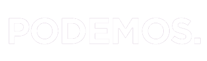

beta

Videoconferencias
Pads
Guía de uso
Soporte
Servicio de edición colaborativa de documentos de texto llamados 'Pads'
Escribe el nombre del pad:
Soporte
Entrar
¡Estamos en pruebas!
Es probable que durante los próximos días se borren varias veces los pads, así que recordar guardaros copia.
Servicio público
: No requiere autentificación.
Software libre
: Es una instancia de
Etherpad Lite
.
Funciona en la web, sin instalar nada
.